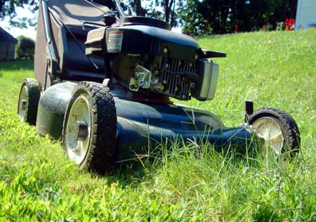

Did you know the average lawn mower emits as much smog-formingpollution as eight new cars traveling at 55 miles per hour? Lawnmowers, hedge trimmers, chain saws and leaf blowers represent asignificant source of air pollution, according to theUnion of Concerned Scientists(UCS). But there are a few things you can do to reduce the negativeenvironmental impact of your lawn care:
1. Perform routine maintenance as recommended in the owner'smanual. To keep your lawn tools performing at maximum efficiency,regularly change the motor oil, clean or replace air filters and doperiodic tune-ups.
2. Keep blades sharp on cutting tools so you spend less timerunning the motor.
3. Clean underneath your lawn mower's deck for reducedresistance and maximum efficiency.
4. Use the correct mix of fuel and oil for equipment withtwo-stroke engines. Many lawn tools use two-stroke engines that arelightweight, less expensive and slightly more powerful for theirsize than the four-stroke engines found on most cars. But anincorrect mix of fuel and oil for your engine type will decreaseits efficiency and increases pollution. Check your owner's manualto see which kind of engine your lawn tools use. And when the timecomes to replace your current tools, choose models with four-strokeengines, which are more efficient and generate lesspollution.
5. Avoid spilling gas when filling your mower's gas tank.When gasoline evaporates it contributes to air pollution, so use afunnel to pour gas into the tank, and be sure not to overfillit.
6. Replace old yard equipment with electric-powered options.While the initial cost may be higher than their gas-poweredcounterparts, electric mowers can be 50 percent less expensive tooperate over a 10-year life span because of lower fuel costs.
7. Use manual tools such as push mowers, pruning shears,rakes or brooms ? you'll eliminate pollution and get moreexercise.
|
 |
|
|